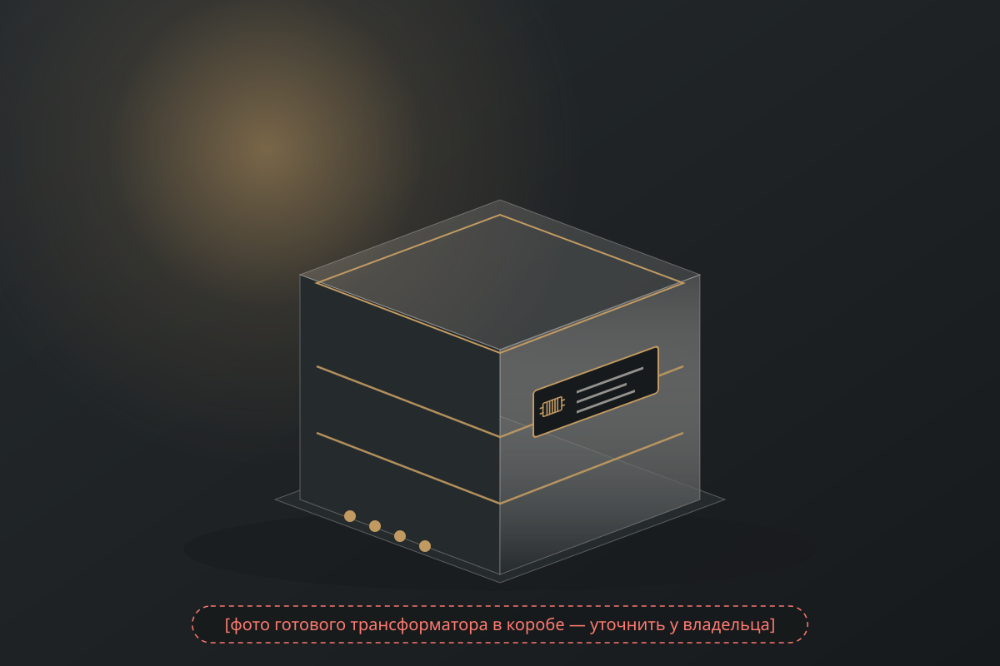

01
Расчёт под лампу и нагрузку
Число витков, отводы и зазор — под режим вашей лампы, схему и акустику, а не «средний» вариант. Нестандартная нагрузка — обычная задача.
Намотка трансформаторов и дросселей для ламповой техники · [город]
Выходные SE/PP, трансформаторы-регуляторы громкости, дроссели — под вашу лампу, схему и нагрузку. Ручная намотка в [город], оптимизированная под вашу задачу.
Цену «от» и срок называем до оплаты; изготовление пары — от 7 дней, ближайший старт — [ближайший старт — уточнить].
[фото станка или медной обмотки в полумраке — уточнить у владельца]
02
Готовое изделие, а не обещание: выходной трансформатор в декоративном коробе [уточнить, какое изделие снять]. Каждое такое — по ТЗ заказчика, вручную, с протоколом измерений.

Без фото владельца блок на сайт не выносится.
03
КБ [Название] — конструкторское бюро и мастерская намотки в [город]: [ИП или ООО — уточнить], ИНН [ИНН], [с … года]. Намотано [сколько пар намотано — уточнить]. Рассчитываем трансформаторы и дроссели под лампу, схему и нагрузку заказчика, мотаем вручную, измеряем каждое изделие и прикладываем протокол измерений. Карты намотки заказчиков третьим лицам не передаём [подтвердить].
04
На этом держится каждое изделие. Остальное — детали ТЗ.
01
Число витков, отводы и зазор — под режим вашей лампы, схему и акустику, а не «средний» вариант. Нестандартная нагрузка — обычная задача.
02
Железо ПЛ и ШЛ из стали М6 — под задачу и лампу. Какой магнитопровод берём и почему, объясняем в смете.
03
Обмотки мотаем вручную любым проводом по требованию клиента; изоляция — бумага, каждый слой пропитывается лаком. Схему намотки не раскрываем — это наша работа; для вас важно, какой материал и какое железо под вашу лампу.
04
К каждому изделию — технические характеристики вашего экземпляра: индуктивность, сопротивление обмоток постоянному току, полоса частот в нагрузке, близкой к рабочей схеме, паразитная ёмкость. Для пары — обе половины рядом.
05
Мотаем трансформаторы и дроссели для ламповых усилителей, фонокорректоров и предусилителей по техническому заданию: под режим вашей лампы, нагрузку и схему.
На железе ПЛ и ШЛ (сталь М6). Опыт намотки под лампы 6В4G (6С4С), ГМ-70, 845, Г-811, 4654, EL12, AL4, EL8, EF14, 300B и другие. С немагнитным зазором под ток покоя вашей лампы, отводами [4/8/16 Ом — уточнить], при необходимости — ультралинейным отводом и катодной обмоткой [уточнить]. Приведённое сопротивление и мощность — по ТЗ: [диапазон Ra и мощности — уточнить].
От [… ₽] за штуку · срок от 7 дней на пару · цены на [дата — уточнить] · протокол измерений · гарантия 1 год.
Под ваши лампы и режим — назовите лампу в ТЗ. Симметричные половины первички, отводы под нужную нагрузку, оптимальный режим работы лампы при нестандартной нагрузке. По желанию — декоративный короб для трансформаторов.
От [… ₽] за штуку · срок от 7 дней на пару · цены на [дата — уточнить] · протокол измерений · гарантия 1 год.
Дроссели в блок питания (П-фильтр), в анодную нагрузку каскада и в выходные фильтры усилителей класса D. Индуктивность и ток — по вашему ТЗ, измеренные значения — в протоколе.
От [… ₽] за штуку · срок от 7 дней на пару · цены на [дата — уточнить].
Трансформаторный регулятор громкости под ваш источник и вход усилителя: число отводов и коэффициенты — по ТЗ; измеренные параметры — в протоколе.
От [… ₽] · срок от 7 дней на пару · цены на [дата — уточнить].
По потребности клиента, в том числе под ваш дизайн [материалы и покрытия — уточнить]. Цена короба считается отдельно от трансформатора: стандартный — «от», нестандартный — по факту расчёта.
Короб — от [… ₽], отдельно от трансформатора; нестандартный — по расчёту · цены на [дата — уточнить].
Перематываем и восстанавливаем чужие трансформаторы — в пределах габаритов наших станков и при известных технических данных (токи, напряжения). Если изделие сгорело полностью, восстанавливаем максимально близкие значения. Сначала осматриваем и называем цену и срок до оплаты.
Цена и срок — после осмотра; ориентир — от [… ₽] · срок от 7 дней на пару · цены на [дата — уточнить].
06
Опыт намотки выходных трансформаторов под 6В4G (6С4С), ГМ-70, 845, Г-811, 4654, EL12, AL4, EL8, EF14, 300B и другие. Назовите лампу в ТЗ — рассчитаем под её режим.
Выберите лампу, схему и мощность — покажем строку пресета с ценой «от» и сроком и подставим данные в форму ТЗ. Без JavaScript работает таблица ниже.
Каждая лампа — отдельной строкой: по ней считаем цену «от» и срок. Собираете по типовой схеме — выберите строку; по своей — опишите схему в форме, рассчитаем под неё. Короб — отдельной позицией.
| Лампа | Схема | Ra, кОм | Мощность, Вт | Нагрузка, Ом | Железо | От, ₽ (пара) | Срок (пара) | В протоколе |
|---|---|---|---|---|---|---|---|---|
| 6П14П / EL84 | SE | [уточнить] | [уточнить] | 4/8 | [уточнить] | [уточнить] | от 7 дней | L, R, полоса, ёмкость |
| 6П14П / EL84 | PP | [уточнить] | [уточнить] | 4/8 | [уточнить] | [уточнить] | от 7 дней | L, R, полоса, ёмкость |
| 6П3С / 6L6 | SE | [уточнить] | [уточнить] | 4/8 | [уточнить] | [уточнить] | от 7 дней | L, R, полоса, ёмкость |
| 6П3С / 6L6 | PP | [уточнить] | [уточнить] | 4/8 | [уточнить] | [уточнить] | от 7 дней | L, R, полоса, ёмкость |
| EL34 | PP | [уточнить] | [уточнить] | 4/8 | [уточнить] | [уточнить] | от 7 дней | L, R, полоса, ёмкость |
| KT88 / 6550 | PP | [уточнить] | [уточнить] | 4/8 | [уточнить] | [уточнить] | от 7 дней | L, R, полоса, ёмкость |
| 300B | SE | [уточнить] | [уточнить] | 4/8/16 | [уточнить] | [уточнить] | от 7 дней | L, R, полоса, ёмкость |
| 6С4С (6В4G) / 2A3 | SE | [уточнить] | [уточнить] | 4/8 | [уточнить] | [уточнить] | от 7 дней | L, R, полоса, ёмкость |
| 6С33С | SE | [уточнить] | [уточнить] | 4/8 | [уточнить] | [уточнить] | от 7 дней | L, R, полоса, ёмкость |
| ГУ-50 | SE / PP | [уточнить] | [уточнить] | 4/8 | [уточнить] | [уточнить] | от 7 дней | L, R, полоса, ёмкость |
| Замена ТВЗ-1-9 | SE | [уточнить] | [уточнить] | 4/8 | [уточнить] | [уточнить] | от 7 дней | L, R, полоса, ёмкость |
| ГМ-70 | SE | [уточнить] | [уточнить] | 4/8 | [уточнить] | [уточнить] | от 7 дней | L, R, полоса, ёмкость |
| 845 | SE | [уточнить] | [уточнить] | 4/8 | [уточнить] | [уточнить] | от 7 дней | L, R, полоса, ёмкость |
| Г-811 | SE | [уточнить] | [уточнить] | 4/8 | [уточнить] | [уточнить] | от 7 дней | L, R, полоса, ёмкость |
| 4654 | SE | [уточнить] | [уточнить] | 4/8 | [уточнить] | [уточнить] | от 7 дней | L, R, полоса, ёмкость |
| EL12 | SE | [уточнить] | [уточнить] | 4/8 | [уточнить] | [уточнить] | от 7 дней | L, R, полоса, ёмкость |
| AL4 | SE | [уточнить] | [уточнить] | 4/8 | [уточнить] | [уточнить] | от 7 дней | L, R, полоса, ёмкость |
| EL8 | SE | [уточнить] | [уточнить] | 4/8 | [уточнить] | [уточнить] | от 7 дней | L, R, полоса, ёмкость |
| EF14 | SE | [уточнить] | [уточнить] | 4/8 | [уточнить] | [уточнить] | от 7 дней | L, R, полоса, ёмкость |
Состав строк и все числа — от владельца; таблица остаётся черновиком, пока в ней есть «уточнить». Цены актуальны на [дата — уточнить].
07
Семь составляющих каждого изделия — как описывает изделие инженер, а не реклама. Схему намотки и порядок слоёв не публикуем; для заказчика важно, какой материал и какое железо под его лампу.
![[фото материалов и готового изделия: железо, медь, бумага, лак, выводы — уточнить у владельца]](img/placeholder-inside.svg)
Пакет пластин ПЛ или ШЛ из стали М6. [Марка и толщина пластины — уточнить.] Под какую лампу какое железо — пишем в смете.
Любой обмоточный провод по требованию клиента; по умолчанию подбираем под ток и нагрузку сами. [Класс провода по умолчанию — уточнить.]
[Материал и исполнение каркаса — уточнить у мастера.]
Между слоями и обмотками — бумага. [Марка и толщина — уточнить.]
Каждый слой пропитывается лаком — без гула и микрозазоров, с защитой от влаги. [Лак — уточнить.]
[Тип выводов и маркировка отводов 4/8/16 Ом — уточнить.]
[Крепёж, посадочные размеры — в смете и протоколе.] Короб — по потребности, под ваш дизайн, считается отдельно.
![[фото: пакет пластин / сердечник — уточнить]](img/placeholder-photo.svg)
![[короткое видео 20–40 с: станок, пропитка, измерение на столе — уточнить у владельца]](img/placeholder-video.svg)
Видео хранится на хостинге рядом с сайтом (mp4, до [… МБ]), не в git; без внешних плееров. Крупных планов укладки витков в ролике нет.
Без фото от владельца блок остаётся схемой-заглушкой. Схема намотки на фото не показывается.
08
К каждому изделию прикладываем технические характеристики вашего экземпляра, а не модели: индуктивность, сопротивление обмоток постоянному току, полоса частот в нагрузке, близкой к рабочей схеме, паразитная ёмкость. Для пары — обе половины рядом. Это протокол наших измерений, а не сертификат или документ по ГОСТ.
Без реального образца протокола блок на сайт не выносится.
![[образец протокола измерений — уточнить у владельца]](img/placeholder-passport.svg)
Протокол измерений [пример: выходной SE под 300B, экз. А]
| Параметр | Значение | Условия измерения |
|---|---|---|
| Индуктивность первичной обмотки | [… Гн] | при токе подмагничивания [… мА], частота [… Гц] |
| Сопротивление обмоток постоянному току | первичная [… Ом] · вторичная [… Ом] | при [… °C] |
| Полоса частот в нагрузке | [… Гц — … кГц] по уровню [−1/−3 дБ] | нагрузка [… Ом], уровень [… В], источник с внутренним сопротивлением [… Ом] — близко к рабочей схеме |
| Паразитная ёмкость | [… пФ] | метод и частота — [уточнить] |
Если измерить индуктивность бытовым LC-метром без тока подмагничивания, цифра будет другой: для однотактного трансформатора важна индуктивность под рабочим током, её и указываем.
09
Намотанные изделия с подписью: лампа · мощность. [Выбрать 6–8 работ — уточнить у владельца.]
[лампа · мощность — уточнить]
[лампа · мощность — уточнить]
[лампа · мощность — уточнить]
[лампа · мощность — уточнить]
[лампа · мощность — уточнить]
[лампа · мощность — уточнить]
Карточки — по реальным изделиям владельца. Без реальных работ блок на сайт не выносится.
10
Форма ниже: лампа или схема, SE/PP, нагрузка, мощность. Если параметров нет — опишите, что собираете. Заказ — от одного трансформатора, без верхнего предела.
В течение [N рабочих дней — уточнить] предложим железо под задачу, назовём цену трансформатора (и короба — отдельно) и срок. Предоплата 50 % (невозвратная).
Ручная намотка по карте расчёта: медь, бумажная изоляция, пропитка лаком каждого слоя. О ходе сообщаем [по почте или в мессенджере — уточнить].
Измеряем каждый экземпляр: индуктивность, сопротивление обмоток постоянному току, полоса частот в нагрузке, близкой к рабочей схеме, паразитная ёмкость; для пары — обе половины рядом. Протокол присылаем до отправки [подтвердить].
Остаток — по завершении работы, до отправки; оплата после получения не принимается. Готовые пары можно отправлять частями после оплаты. [фото пары перед отправкой и трек-номер — подтвердить]. Доставка по России и за рубеж: [перевозчик — уточнить]; в Казахстан и Беларусь — [Казахстан и Беларусь — уточнить].
| Изделие | От, ₽ | Срок |
|---|---|---|
| Выходной SE (шт.) | [уточнить] | [уточнить] |
| Выходной PP (шт.) | [уточнить] | [уточнить] |
| Силовой до [… Вт] | [уточнить] | [уточнить] |
| Дроссель до [… Гн / … мА] | [уточнить] | [уточнить] |
| Межкаскадный / входной | [уточнить] | [уточнить] |
| MC-повышающий (пара, в корпусе) | [уточнить] | [уточнить] |
| Перемотка силового / выходного | [уточнить] | [уточнить] |
Итог — после расчёта по ТЗ. Строки с «уточнить» на сайт не выносятся. Цены актуальны на [дата — уточнить].
11
Срок — 1 год [с даты отгрузки — подтвердить], при технически правильной эксплуатации.
Предоплата 50 % (невозвратная); остаток — по завершении работы, до отправки; оплата после получения не принимается. Способы: [способы оплаты: перевод по реквизитам / карта / счёт для юрлиц — уточнить].
По России: [перевозчик — уточнить]. В Казахстан и Беларусь: [Казахстан и Беларусь — уточнить]. За рубеж — по запросу. Готовые пары из большого заказа отправляем частями после оплаты. Стоимость и срок доставки — в смете [уточнить].
[какие документы выдаём: протокол измерений, чек/акт, договор для юрлиц — уточнить]. Протокол измерений — на каждый экземпляр; это наш протокол, не сертификат. Если изделие не подошло: [что делать, если изделие не подошло — уточнить].
12
Лампу (или схему, ссылку на неё), тип каскада (SE/PP), сопротивление акустики и желаемую мощность. Остальное — Ra, ток покоя, отводы, железо — рассчитаем и предложим; технические поля формы необязательны. Чек-лист параметров — прямо в форме.
Однотактному каскаду (SE) нужен трансформатор с немагнитным зазором под ток покоя лампы; двухтактному (PP) — без зазора, с симметричными половинами первички. Один в другом не заменяется. Если сомневаетесь — опишите схему.
[Уточнить у владельца: принимаете ли магнитопроводы заказчика; условия проверки пригодности.] По умолчанию: проверим железо и скажем до оплаты.
Зависит от схемы и бюджета: [позиция мастерской — уточнить]. Мы не советуем аморф там, где он не даст выигрыша, и говорим об этом до заказа.
Изготовление пары — от 7 дней; срок растёт пропорционально числу пар; готовые пары можно отправлять частями после оплаты. Срок и цену называем до оплаты, а не «уточняйте при заказе»; этапы: ТЗ → расчёт → намотка → измерение → отправка.
Ориентиры «от» — в строках пресетов и в таблице блока «Как проходит заказ» (дата актуальности указана). Точная смета — после расчёта по вашему ТЗ в течение [N рабочих дней — уточнить]. Трансформатор и короб считаются отдельно: стандартный короб — «от», нестандартный — по факту расчёта. За что цена: железо под задачу, ручная намотка, бумага и лак, измерение каждого экземпляра.
Индуктивность первичной обмотки при токе подмагничивания, сопротивление обмоток постоянному току, полоса частот в нагрузке, близкой к рабочей схеме (с указанием нагрузки, уровня и источника), паразитная ёмкость. Для пары — обе половины рядом; у каждой цифры — условия измерения. Это протокол наших измерений, а не сертификат и не документ по ГОСТ. Образец — в блоке «Протокол измерений».
Да: заказ — от одного трансформатора, верхнего предела нет. Срок — от 7 дней на пару и растёт пропорционально числу пар; готовые пары можем отправлять частями после оплаты.
Да: перематываем и восстанавливаем чужие трансформаторы в пределах габаритов наших станков и при известных технических данных (токи, напряжения). Если сгорел полностью — восстанавливаем максимально близкие значения. Сначала осматриваем и называем цену и срок до оплаты. Что присылать: фото, размеры, данные шильдика или само изделие.
[Уточнить у владельца по каждому пункту.]
Доставляем по России и за рубеж. В Казахстан и Беларусь: [Казахстан и Беларусь — уточнить]. Сайт открыт из любой страны, оплата из СНГ — [способ — уточнить].
Предоплата 50 % (невозвратная); остаток — по завершении работы, до отправки; оплата после получения не принимается. [фото пары перед отправкой и трек-номер — подтвердить]. Способы: [способы оплаты: перевод по реквизитам / карта / счёт для юрлиц — уточнить].
1 год [с даты отгрузки — подтвердить], при технически правильной эксплуатации. Покрывает [материалы и работу — подтвердить]; не покрывает перегрузку по напряжению или току, переделку и неверное включение. При поломке сначала напишите — не отправляйте без согласования. [перемер за наш счёт при расхождении с протоколом — подтвердить]. Если изделие не подошло: [что делать, если изделие не подошло — уточнить].
[Уточнить у владельца — для серий 5–50 пар.] Карты намотки заказчиков не передаём третьим лицам — [подтвердить].
Если известны параметры (Ra, мощность, отводы, габариты) — да: намотаем под них. Названия чужих брендов в протоколе не используем.
Чаще всего — расчёт «на средний случай», неподходящее железо или габаритная мощность вместо реальной. Мы считаем под вашу лампу и нагрузку, а полосу частот измеряем в нагрузке, близкой к рабочей схеме, и указываем в протоколе вместе с реальной мощностью по ТЗ.
КБ [Название] — [ИП или ООО — уточнить], ИНН [ИНН], [город], [с … года]. Реквизиты и контакты — в подвале страницы. Опыт по лампам: 6В4G (6С4С), ГМ-70, 845, Г-811, 4654, EL12, AL4, EL8, EF14, 300B. Работы с подписью «лампа · мощность» и отзывы с датами — по мере появления [ссылки на форумные темы — уточнить].
Укажите в ТЗ габариты окна и крепёж или пришлите фото старого трансформатора с линейкой — повторим посадочные [подтвердить у владельца]. Габариты готового изделия — в смете и протоколе.
Серийный намотан «на средний случай»; мы считаем под вашу лампу, ток покоя и нагрузку, мотаем вручную на железе под задачу, с бумажной изоляцией и пропиткой лаком каждого слоя, и измеряем каждый экземпляр. Если для вашей задачи хватит серийного — скажем честно до оплаты.
Можно по вашему расчёту: пришлите карту намотки, проверим и назовём цену. Свои схемы намотки мы не раскрываем, но измерения вашего изделия — в протоколе.
13
Заполните, что знаете: после выбора типа изделия покажем только нужные поля. Не знаете параметров — оставьте пустыми, рассчитаем и предложим. Схему усилителя или фото можно прислать в мессенджер или на почту — адреса в подвале.
Пишете ТЗ в тетради или пришлёте письмом? Скачайте бланк, заполните и пришлите на почту или в мессенджер.
Отправка с сайта пока не подключена. Скопируйте текст заявки и отправьте его на почту мастерской или в мессенджер.